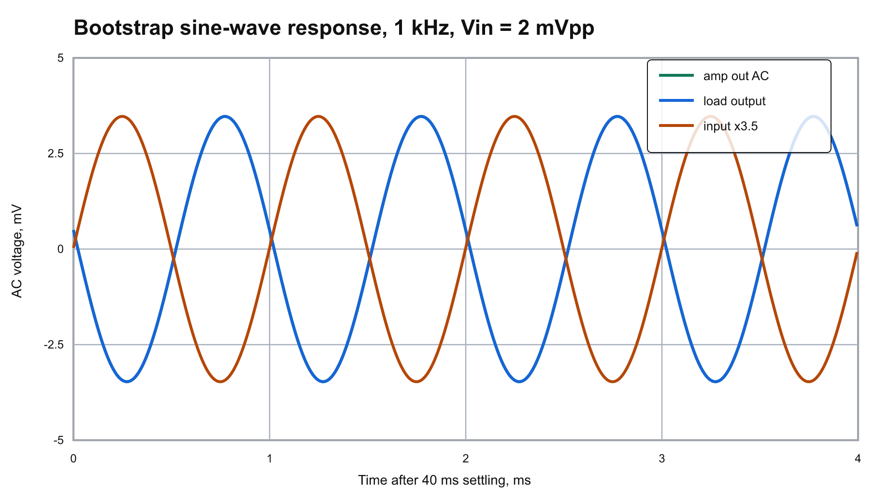
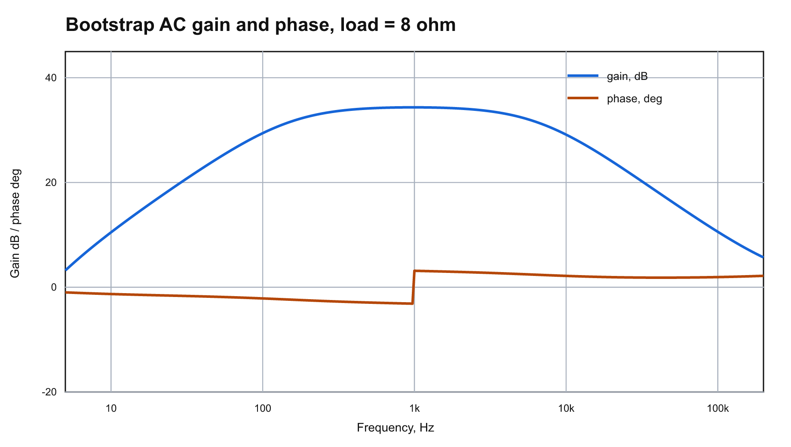
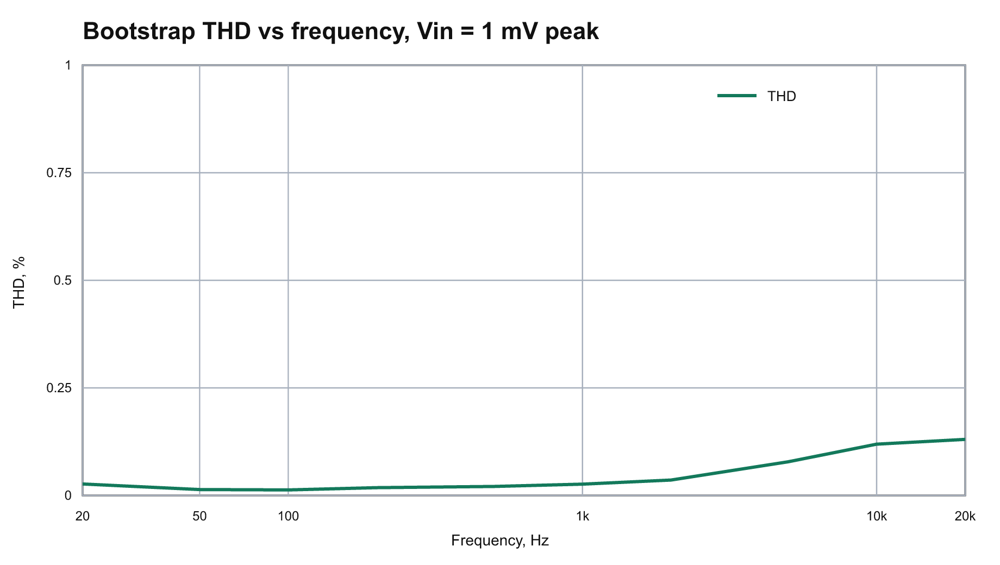
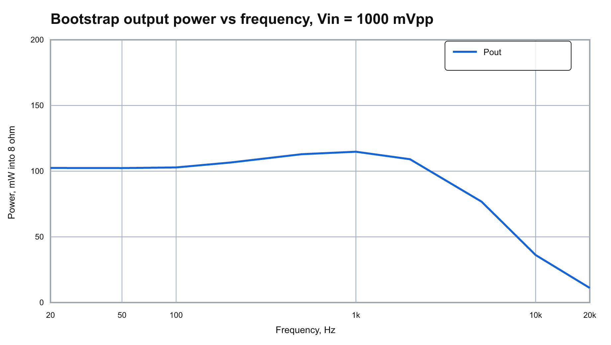
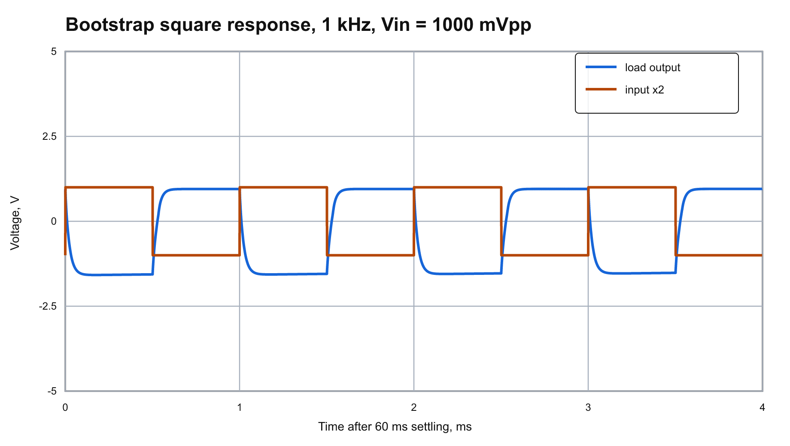
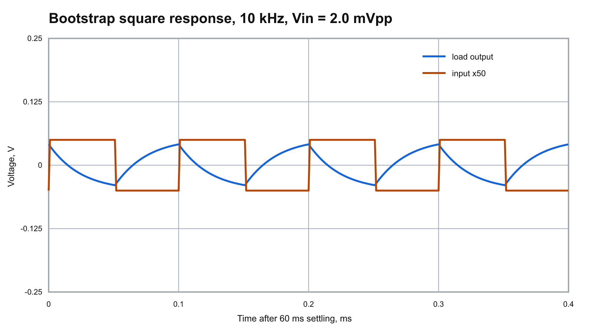

{kind=link}
003 RadioStorage shema-1804-6 Bootstrap Reconstruction
This folder contains a local reconstruction of the amplifier schematic from:
https://radiostorage.net/uploads/Image/schemes/18/shema-1804-6.png
Only the voltage-addition/bootstrap variant is kept here. The earlier no-bootstrap reconstruction was removed from the published schematic, plots, netlists, and main result data because this variant is now the working design.
GitHub Preview
Source Image
Reconstructed Schematic

Simulation Plots






Recognized Circuit
VT1: KT3102A NPN common-emitter voltage amplifier,Bf = 100.VT2: KT817A NPN upper emitter follower,Bf = 50.VT3: KT816A PNP lower emitter follower,Bf = 50.VD1,VD2: KD521A bias diodes between output transistor bases.R1A,R1B: split upper bias resistor, 560 ohm and 1.8 kOhm, with bootstrap drive applied to their junction.R2: recognized as 6.2 kOhm in the image, then retuned to the common E24 value 47 kOhm for use withR3 = 10 kOhmandR4 = 100 ohm; connected from the output emitter node to the VT1 base in this model.R3: 10 kOhm VT1 base return.R4: 100 ohm VT1 emitter degeneration resistor.C1: 1000 uF supply decoupling.C2: 4700 uF output coupling capacitor for this recalculated run.C3: 10 uF input coupling capacitor.C4: 470 uF bootstrap capacitor from the output emitter node to theR1A/R1Bjunction.B1: speaker load, modeled as the requested 8 ohm load.
Passive parts use common value series: E24 for resistors and common electrolytic capacitor values for C1, C2, C3, and C4.
ngspice Check
The bootstrap model converged in ngspice. After adding R4 = 100 ohm in the VT1 emitter circuit, R1A, R1B, and R2 were retuned for R3 = 10 kOhm, about half supply at out, and about 10 mA through the output stage.
Operating point from data/bootstrap/ngspice.log:
V(b_in): about 0.884 VV(e_vt1): about 0.224 VV(drive): about 5.438 VV(b_top): about 6.748 VV(out): about 6.090 V before output capacitorV(load): about 0.000 V DC after output capacitor- VT2 collector current: about 9.82 mA
- VT3 collector current: about 9.71 mA
- Total supply current in this simplified transistor model: about 12.04 mA
This no-emitter-resistor diode-biased output stage remains thermally sensitive; the current is very dependent on transistor and diode models.
Key 1 kHz Result
For a 1000 mVpp sine input, selected from the 1-2-5 input swing series:
- Output power at 1 kHz into 8 ohm:
114.8082 mW - Load RMS voltage at 1 kHz:
0.958 V - THD estimate at 1 kHz, harmonics 2-5 from ngspice transient data:
18.805 %
Input Level Choice
The DC output node is close to half supply, so the theoretical rail-limited symmetric swing is about 11.82 Vpp, and half of that would be about 5.91 Vpp. This simplified model compresses before it can produce that cleanly. A 1-2-5 series input-level sweep selected 1000 mVpp as the practical larger-signal test point; it gives about 2.44 Vpp at the load on the 1 kHz sine plot, roughly half of the largest useful simulated swing before strong compression.
Non-Clipping Check
The selected transient input level is intentionally small so the simulated output does not clip.
- Sine input swing:
1.0000 Vpp. - Output node before C2:
4.3455..6.7944 V. - Rail headroom at that node: at least
4.3455 V. - Speaker/load swing after C2:
2.4410 Vpp.
Square-Wave Response
Square-wave transient runs use the same 1000 mVpp input and show the load voltage after 60 ms of settling.
- 1 kHz: load swing about
2.535 Vpp. - 10 kHz: load swing about
1.947 Vpp.
Reusable Runner
The concrete circuit variant lives in variants/bootstrap.py, while the shared runner and helpers live under scripts/. Run the complete regeneration flow from the repository root with:
python scripts\run_circuit_result.py results\003_radiostorage_shema_1804_6\variants\bootstrap.pyFiles
source/shema-1804-6.png: original downloaded image.variants/bootstrap.py: reusable circuit variant with schematic drawing, SPICE netlists, measurements, and result description.schematic/reconstructed_amplifier_bootstrap.svg/png: redrawn bootstrap/voltage-addition schematic using transistor symbols.netlists/radiostorage_amp_bootstrap.cir: main ngspice netlist.data/bootstrap/ac_response.csv: AC gain/phase data from ngspice.data/bootstrap/transient_1khz.csv: 1 kHz transient data from ngspice.data/bootstrap/frequency_sweep.csv: frequency sweep with power and THD estimates.data/bootstrap/square/*.csv: 1 kHz and 10 kHz square-wave transient data.plots/bootstrap_*.svg/png: generated plots for the voltage-addition variant.
{kind=link}
{kind=link}
{kind=link}
{kind=link}
{kind=link}
{kind=link}